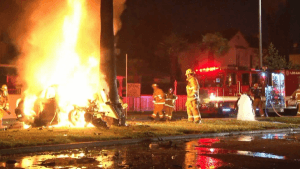

< < < Back
The Mysterious Death Of Iraq Veteran And “Gray State” Film Director David Crowley – Return Of Kings
The director of a dystopian film five years in the making entitled Gray State was found dead, along with his 28-year old wife and 5-year old daughter in their Minneapolis home last year. Screenwriter and Iraq Veteran David Crowley is said to have committed murder-suicide, killing his Pakistani wife Komel and daughter Raniya. At least, that is the official story.
Officials say Crowley shot his family and then himself after learning a deal to finish the Gray State project fell through. Musician and friend Jordan Page said Crowley was negotiating a $30 million production budget with a major Hollywood studio to finish the film. Crowley was a former Army soldier who met his wife Komel while serving in Texas. She converted from Islam to Christianity for the marriage.
Neighbor Collin Prochnow grew suspicious when he saw unopened Christmas presents lingering on the couple’s doorstep three weeks after the holiday. He decided to check on them, and found the family dead inside their home. Following his death, the future of the Gray State project is in doubt as Crowley’s colleagues wrote:
The future of Gray State is uncertain… please understand we are all in complete shock by this having lost a great friend.
Interestingly, Gray State is a movie about emerging world government, which dramatized FEMA camps, the police state, martial law, RFID chip implants, state violence against the citizenry, false flags, and the loss of freedom. The film shows U.S. military patrolling American streets, FEMA soldiers shooting dissenters, surveillance cameras in homes, and a “cashless” society in which one has to be implanted with a chip to buy food from government-run food distribution centers because supermarket shelves are empty.
This is the concept trailer, which shows how far production on the film was before Crowley’s untimely death. The tag line for the film is The Second American Revolution may not be remembered.
Intimidation Tactic
Many of Crowley’s followers feel he was murdered as an intimidation tactic, and as a warning to those would pick up the Gray State mantle and try to alert the masses to what’s coming. Live Free or Die posted this reaction on All News Pipeline:
With ‘watchmen’ and US Patriots/Veterans now under what appears to be a well-coordinated assault to silence them, were the deaths of Crowley and his wife and child another such move by a NWO now desperate to continue their long-held plans? Were these deaths REALLY murder suicide or something MUCH more sinister?
A Facebook page has been set up calling for Justice for David Crowley, which aims “to help clear the good name of David Crowley.” The page currently has over 7,000 supporters.
Since most of the people involved with the film are advocates for personal liberty speaking out against organizing world government and the loss of liberty, a box office success of the film could help spark a wider awakening and change in public opinion. It is plausible that striking at the shepherd to dispel his followers was the real reason behind Crowley’s death.
The crime scene offers up questionable evidence, including an opened Quran, Allahu Akbar written on a wall in the home in blood, and a quickly scribbled note which is claimed to be the suicide note. Investigators said Crowley wrote Allahu Akbar as a swipe at his wife after he killed her, which is strange since she converted to Christianity to marry him. Crowley’s neighbor Prochnow, who discovered their bodies, said he never heard the couple fighting and that they seemed an idyllic family. This makes the murder-suicide claim all the more suspicious. Further, why would Crowley kill his own 5-year old daughter? Why did the neighbors not hear gunfire? The issue has never received the attention or scrutiny it deserves.
When looking at the intimidation tactic angle, it helps to examine Crowley’s project further.

Gray State Director Crowley and his wife
Film Synopsis
The film description for Gray State picks up where Orwell, Huxley, and Bradbury left off. Here is the synopsis:
The world reels with the turmoil of war, geological disaster, and economic collapse, while Americans continue to submerge themselves in illusions of safety and immunity. While rights are sold for security, the federal government, swollen with power, begins a systematic takeover of liberty in order to bring about a New World Order.
Americans, quarantined to militarized districts, become a population ripe for tyrannical control. Fear mongering, terrorism, police state, martial law, war, arrest, internment, hunger, oppression, violence, resistance – these are the terms by which Americans define their existence. Neighbor is turned against neighbor as the value of the dollar plunges to zero, food supplies are depleted, and everyone becomes a terror suspect. There are arrests. Disappearances. Bio attacks. Public executions of those even suspected of dissent. Even rumors of concentration camps on American soil.
This is the backdrop to an unfolding story of resistance. American militias prepare for guerilla warfare. There are mass defections from the military as true Patriots attempt to rally around the Constitution and defend liberty, preparing a national insurgency against federal forces, knowing full well this will be the last time in history the oppressed will be capable of organized resistance.
It is a time of transition, of shifting alliance, of mass awakening and mass execution. It is an impending storm, an iron-gray morning that puts into effect decades of over-comfort and complacency, and Americans wake up to an occupied homeland. It is a time of lists. Black list, white list, and those still caught in the middle, those who risk physical death for their free will and those who sell their souls to maintain their idle thoughts and easy comforts. It is in this Gray State that the perpetuation of human freedom will be contested, or crushed.
Is it the near future, or is it the present? The Gray State is coming – by consent or conquest. This is battlefield USA.
The idea behind the film is as chilling as it is prescient about current world events. This documentary about the film, entitled Behind The Veil, offers astute commentary as to what is going on in the world and why those involved with the film felt it was so important to get it released.
In the documentary, when asked is Gray State real Lead Actor Danny August Mason said this to interviewers:
Absolutely it’s real. We see it every day. We see it in the news. We see it in headlines, but people still don’t acknowledge it. People don’t want to recognize that it’s actually here.
Lord Christopher Monckton, former advisor to Prime Minister Margaret Thatcher, seen in the behind the scenes documentary has perhaps the most chilling and relevant commentary:
If we allow democracy, through negligence, and carelessness, and the crude ambition for money, power and glory of politicians, to be handed away as we already have in Britain, to a super-national entity which we do not elect and cannot control, then you become just another police state. The freedom of the people will no longer be guaranteed by their own voices and their own vote. There will be an increasing gulf fixed between the governing class which will wield all realistic power, and the governed who will wield none. We’ll be right back to square one, and all the work of your Founding Fathers will be carelessly set to naught by the very people to whom you have entrusted the defense of that Constitution.
Stifling debate about the issue of encroaching tyranny by eliminating or censoring other views has been the modus operandi of authoritarian governments since time immemorial.

The just-leased Mercedes C250 coupe of another whistle-blower, journalist Michael Hastings, aflame after a mysterious high speed impact in 2012
Political Assassinations
Going back thousands of years, the political elimination of enemies of the state or those who reveal dirty deeds is nothing new. It was a regular occurrence in Roman government. If one scratches the surface, the Crowley death is just one of many deaths of those who do not adhere to the official narrative coming out of Washington that have occurred under mysterious circumstances.
A cursory Google search will reveal numerous credible sources asking questions that never get asked by the mainstream media about whistle-blowers randomly dying of everything from high speed car accidents (Michael Hastings) to heart attacks (Andrew Breitbart) to cancers (Aaron Russo, who refused to be recruited by the Rockefeller family) when they challenge corporate-government power brokers. What makes these deaths suspicious is the fact they came either as major stories were about to be broke or after the whistle had already been blown.
Speaking of heart attacks, interestingly, Military.com confirmed the existence of a heart-attack gun by digging up Congressional testimony from the 1970s. Keep in mind, this technology is now 40 years old, and even then the U.S. had the technology to fire a heart attack dart into a target—a dart so small it was imperceptible as it enters the victim and leaves no evidence other than a tiny red dot. The toxin breaks down and is undetectable in an autopsy. This interview with a former CIA agent is very revealing and includes relevant testimony from the Congressional Church Committee in 1975, who wanted to find out what they shadowy agency was up to.
There are also other assassination techniques such as the infamous “polonium sushi” and tea meal (KGB agent Alexander Litvinenko) and electronically hijacking cars causing them to suddenly speed out of control, such as some claim in the mysterious death of Rolling Stone journalist Michael Hastings. A Wikileaks document from 2010 reveals CIA Director John Brennan was on a witch hunt against investigative journalists like Hastings who the agency perceived as hostile. San Diego 6 News (yes, the legacy media!) even reported this email about the Michael Hastings incident, sent by none other than Fred Burton, head of Stratfor, which is often referred to as “The Shadow CIA”:
Brennan is behind the witch hunts of investigative journalists learning information from inside the beltway sources.
At the time of his death, Hastings was working on a story about Brennan. Hastings had previously brought down General Stanley McChrystal with an award-winning story. Hastings, much like Gray State director Crowley, was also a vocal critic of the growing surveillance state who referred to Obama administration censorship and blackballing of journalists as a “war on journalism.” The potential motives in both deaths are easy to see.
As previously mentioned, assassinations for political reasons are nothing new. What is new is the fact millions of people are waking up from the collective delusion that dominated the Television Age. We have seen media talking heads at least appear to be controlled opposition quite often. Once the Internet Age destroyed the propaganda model of mass communication, all sorts of chilling stories and inconvenient realities started to emerge. Chalk it up either to conspiracy theories, a CIA-created term invented to discredit dissenters, or to something more sinister going on—that really should not come as a surprise when reviewing the history of governments and of the human species.
Why are false flags and politically motivated assassinations hard to believe when such a small percentage of people control virtually all the wealth and power in the world, and have weapons and tactical killing strategies at their disposal that most dare not dream of? Many ask how can that many people be in on a crime when nobody speaks out or spills the beans. This question was broached a few months back in my expose entitled “Compartmentalization and Conspiracy Theories.” Compartmentalization of information is so effective at hiding state secrets it was successfully used to have thousands of people working on the Manhattan Project without knowing they were building a nuclear bomb.
As former Minnesota Governor Jesse Ventura pointed out, people who scoff at conspiracy theories of 9/11 actually believe in a conspiracy theory themselves. They believe a conspiracy of mostly Saudi Arabian terrorists were able to get funding from a man living in caves in Afghanistan, remain undetected, then conspire to commit the worst act of terrorism to date. In this case, either one conspiracy theory is true or another one is true. Which do you believe?
For these reasons alone, it behooves us to treat each untimely death of people who challenge those in power with at least a modicum of suspicion. Not every trail will lead to a conspiracy. But there are a lot of people dropping if you are paying attention, and Crowley was working on a film that could be devastating to the consolidation of centralized power in Western governments. Those in power have the means, they have the motives, and they have ways of keeping their activities secret. Are we supposed to believe it’s preposterous that forces are at work silencing people each time another whistle blower falls? Do people in government really have that strong a moral compass? Often, it’s not a conspiracy as much as it is oligarchy, psychopathy, and greed.
Read More: Leadership Lessons From “Das Boot”